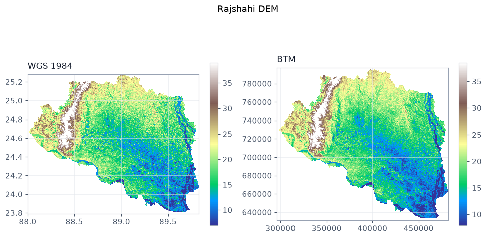
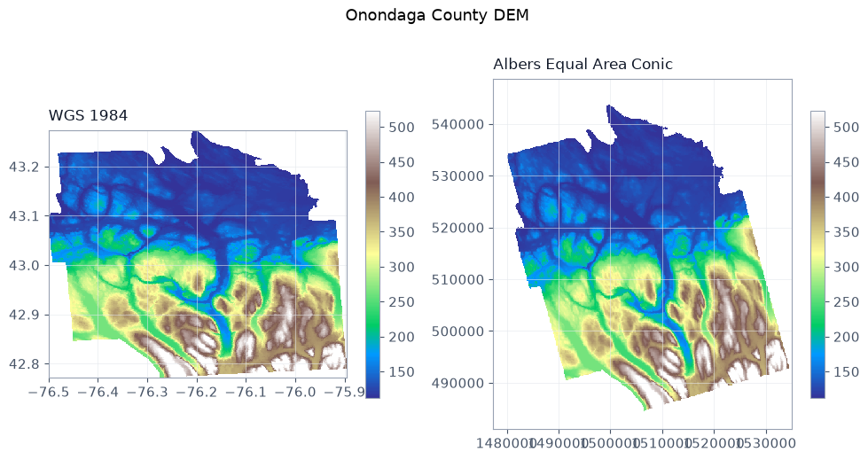

Coordinate Reference Systems (CRS) are crucial for accurately mapping spatial data by defining how spatial coordinates relate to locations on Earth. In this notebook, you’ll learn how to inspect, define, and transform raster datasets using GeoLattice. We’ll demonstrate how to read and validate CRSs, create new CRS definitions, and reproject rasters into different coordinate systems, key steps for any spatial analysis workflow.
Overview
Raster reprojection moves pixel centers from one coordinate reference system to another and resamples values into a new grid. This notebook uses geolattice.raster.raster_CRS: the raster side of CRS work:
get_raster_crs / validate_raster_crs: read and check the CRS on a file
define_crs: build a target CRS from an EPSG code or PROJ string
reproject_raster / warp / warp_options: GDAL Warp with a chosen resampling
Shared CRS definitions live in geolattice.crs. Vector geometry reprojection is covered in 01_03_map_projection_vector_data.ipynb with vector_CRS.
The exercises mirror the R notes in R_Code/map-projection-coordinate-reference-systems-r.qmd (Bangladesh DEM -> BTM) and R_Code/map-projection-coordinate-reference-systems.Rmd (Onondaga DEM -> Albers).
The next cell finds the repository root, points at the Bangladesh and USA DEM folders, and creates output directories under Data/00_shared/raster_data/output_folder.
Installation. This notebook needs installation option 1 (vector, raster, CRS and visualization): pip install "geolattice[core]". See “Installation options” in the GeoLattice README.
Code
# Display matplotlib figures inline in this Jupyter notebook.%matplotlib inline# Standard library imports for path setup.import sys # mutate sys.path so geolattice can be imported from the repo rootfrom pathlib import Path # filesystem paths for locating sample data# Third-party plotting / notebook display helpers.import matplotlib.pyplot as plt # figure and axes creation for DEM mapsfrom IPython.display import display # rich previews in the notebook (kept for consistency)# ===================================================================# Setup and helpers for raster CRS inspection, reprojection, and maps.# Walk up from the working directory to the repo root, import GeoLattice tools,# point BD/USA at the sample DEM folders, and define show_crs()/show_raster().# ===================================================================# Resolve the current working directory as a starting point for the root search.ROOT = Path.cwd().resolve()whilenot (ROOT /"Data"/"00_shared"/"raster_data").is_dir():if ROOT.parent == ROOT:raiseFileNotFoundError("Could not find Data/00_shared/vector_data from the working directory.") ROOT = ROOT.parentsys.path.insert(0, str(ROOT))# Shared CRS class used when normalizing show_crs() input.from geolattice.crs import CRS # GeoLattice CRS wrapper# Open a GeoTIFF (or other raster) as a RasterDataset context manager.from geolattice.raster import open_raster_data # read raster metadata and bands# Raster CRS helpers used throughout this notebook.from geolattice.raster.raster_CRS import ( define_crs, # build a CRS from EPSG, PROJ, WKT, etc. get_raster_crs, # read the CRS tagged on a raster file reproject_raster, # high-level GDAL Warp into a target CRS validate_raster_crs, # normalize/validate the CRS on a raster warp, # call GDAL Warp with explicit WarpOptions warp_options, # build GDAL WarpOptions (SRS, resample, creation opts))# Shared map styling and multi-raster plot helpers.from geolattice.viz import apply_map_style, plot_raster, plot_rasters# Bangladesh DEM samples (GCS and division tiles).BD = ROOT /"Data"/"00_shared"/"raster_data"/"Bangladesh"# Onondaga / USA DEM samples and tile batch.USA = ROOT /"Data"/"00_shared"/"raster_data"/"USA"# Notebook write outputs go under Data/00_shared/raster_data/output_folder.OUTPUT = ROOT /"Data"/"00_shared"/"raster_data"/"output_folder"# Bangladesh single-DEM and BTM outputs.BD_OUT = OUTPUT /"bangladesh"# USA / Onondaga Albers outputs.USA_OUT = OUTPUT /"usa"# Batch outputs for Bangladesh division DEMs.BD_BATCH_OUT = BD_OUT /"BD_DEM"# Batch outputs for Onondaga DEM tiles.USA_BATCH_OUT = USA_OUT /"DEM_TILES"# Create every output folder (parents included) if missing.for folder in (BD_OUT, USA_OUT, BD_BATCH_OUT, USA_BATCH_OUT): folder.mkdir(parents=True, exist_ok=True) # create the folder tree as needed# Apply the shared GeoLattice map style (fonts, colors, spines).apply_map_style()# helper: print a short, readable CRS summarydef show_crs(crs):"""Print name, kind, EPSG, and PROJ string for a CRS-like value."""# Treat a missing CRS as undefined rather than raising.if crs isNone:print("CRS: undefined") # print a short status linereturn# Normalize plain strings / EPSG codes into a geolattice.crs.CRS object. crs = define_crs(crs) ifnotisinstance(crs, CRS) else crsprint(f"name: {crs.name}") # human-readable CRS name# Prefer a short identifier; fall back to PROJ/name when the id is very long.print(f"identifier: {crs.identifier iflen(crs.identifier) <100else (crs.proj or crs.name)}")print(f"geographic: {crs.is_geographic}") # True for lon/lat degree CRSprint(f"projected: {crs.is_projected}") # True for meter/foot projected CRSprint(f"EPSG: {crs.to_epsg()}") # EPSG code when available, else Noneprint(f"PROJ: {crs.proj}") # PROJ string form of the CRS# helper: print size, bounds, and CRS for a path or open RasterDatasetdef show_raster(path_or_ds, title=None):"""Print size, bounds, and CRS for a path or open RasterDataset."""# If the caller passed an already-open dataset, summarize it directly.ifhasattr(path_or_ds, "width"): ds = path_or_ds # open RasterDataset path =getattr(ds, "path", None) # source path when the dataset still knows itprint(f"path: {path}") # print a short status lineprint(f"size: {ds.width} x {ds.height} bands={ds.band_count}") # pixel grid sizeprint(f"bounds: {ds.bounds}") # geographic/projected extent show_crs(ds.crs) # print the CRS summaryreturn# Otherwise open the path briefly just to read metadata. path = Path(path_or_ds) # normalize to Pathprint(f"path: {path}") # print a short status linewith open_raster_data(path) as ds:print(f"size: {ds.width} x {ds.height} bands={ds.band_count}") # pixel grid sizeprint(f"bounds: {ds.bounds}") # geographic/projected extent show_crs(ds.crs) # print the CRS summary# Confirm which folders the notebook will read from and write to.print(f"Bangladesh: {BD}") # print a short status lineprint(f"USA: {USA}") # print a short status lineprint(f"Output: {OUTPUT}") # print a short status line
Two projected CRS definitions are used below. Bangladesh Transverse Mercator keeps the WGS 84 datum (same PROJ string as the vector projection tutorial). For New York, the single-DEM example uses North America Albers (ESRI:102008); the tile batch uses the conterminous-USA Albers (ESRI:102003), matching the R notes.
Code
# Define Bangladesh Transverse Mercator on WGS 84 (same PROJ as the vector CRS tutorial).btm = define_crs("+proj=tmerc +lat_0=0 +lon_0=90 +k=0.9996 "# Transverse Mercator centered on 90 E"+x_0=500000 +y_0=-2000000 +datum=WGS84 +units=m +no_defs"# false easting/northing, metres)print("Bangladesh Transverse Mercator (WGS 84)") # print a short status lineshow_crs(btm) # summarize the BTM CRSprint() # blank line between CRS blocks# Define North America Albers Equal Area Conic NAD83 (ESRI:102008) for the Onondaga DEM.usa_albers = define_crs("+proj=aea +lat_1=20 +lat_2=60 +lat_0=40 +lon_0=-96 "# standard parallels and origin"+x_0=0 +y_0=0 +datum=NAD83 +units=m +no_defs"# NAD83 metres, no false offset)print("North America Albers (ESRI:102008)") # print a short status lineshow_crs(usa_albers) # summarize the Albers CRSprint() # blank line between CRS blocks# Define conterminous-USA Albers (ESRI:102003) for the Onondaga tile batch.usa_albers_conus = define_crs("+proj=aea +lat_1=29.5 +lat_2=45.5 +lat_0=37.5 +lon_0=-96 "# CONUS standard parallels"+x_0=0 +y_0=0 +datum=NAD83 +units=m +no_defs"# NAD83 metres, no false offset)print("Conterminous USA Albers (ESRI:102003)") # print a short status lineshow_crs(usa_albers_conus) # summarize the CONUS Albers CRS
raj_DEM_GCS.tif is a Rajshahi-area DEM already tagged as WGS 84 (EPSG:4326). get_raster_crs / validate_raster_crs read that definition from the GeoTIFF.
Code
# Path to the Rajshahi DEM in geographic WGS 84.dem_gcs_path = BD /"raj_DEM_GCS.tif"print(f"exists: {dem_gcs_path.exists()}") # confirm the sample file is presentshow_raster(dem_gcs_path) # print size, bounds, and CRSprint() # blank line before the validation lineprint("validated:", validate_raster_crs(dem_gcs_path).identifier) # normalized CRS id from the file
The same warp can be built explicitly with warp_options and warp: useful when you need xRes / yRes, a cutline, or multithread I/O.
Code
# Build explicit GDAL WarpOptions for the same BTM warp (format, SRS, resample, tiling).options = warp_options(format="GTiff", # write a GeoTIFF dstSRS=btm, # destination spatial reference resampleAlg="bilinear", # bilinear resampling for elevation creationOptions={"COMPRESS": "DEFLATE", "TILED": "YES"}, # compressed, tiled GeoTIFF)# Separate output path so the high-level reproject_raster result is left alone.warp_copy = BD_OUT /"raj_DEM_BTM_warp.tif"# Run GDAL Warp with the options built above.warp(dem_gcs_path, warp_copy, options=options, overwrite=True)print(f"wrote: {warp_copy.name}") # print a short status line
wrote: raj_DEM_BTM_warp.tif
WGS 1984 (degrees) and Bangladesh Transverse Mercator (meters), side by side.
Code
# Side-by-side maps: geographic WGS 84 DEM and the BTM-projected DEM.fig, axes = plot_rasters( [dem_gcs_path, dem_btm_path], # GCS then BTM paths titles=["WGS 1984", "BTM"], # panel titles figsize=(10, 5), # figure width and height in inches cmap="terrain", # elevation-friendly colormap kind="general", # general single-band raster styling robust=True, # robust stretch for display show=False, # defer show so we can add a figure title)fig.suptitle("Rajshahi DEM", y=1.02) # shared figure title above the panelsfig.tight_layout() # tighten subplot spacingplt.show() # render the figure

Batch projection of multiple rasters
Eight division DEMs live in BD_DEM/GCS. The loop lists inputs, builds output names, and calls reproject_raster for each file (bilinear, same BTM as above).
Code
# List the eight Bangladesh division DEMs in BD_DEM/GCS.dem_input =sorted((BD /"BD_DEM"/"GCS").glob("*.tif"))print(f"{len(dem_input)} input tiles:") # how many tiles will be reprojectedfor path in dem_input:print(f" {path.name}") # print each input filename# Build matching *_PROJ.tif names under the Bangladesh batch output folder.dem_output = [BD_BATCH_OUT /f"{path.stem}_PROJ.tif"for path in dem_input]print() # blank line before the output listprint("output names:") # header for the destination namesfor path in dem_output:print(f" {path.name}") # print each output filename
# Reproject each Bangladesh division DEM to BTM (bilinear, overwrite existing outputs).for src, dst inzip(dem_input, dem_output): reproject_raster( src, # source tile in WGS 84 dst, # destination *_PROJ.tif path dst_crs=btm, # Bangladesh Transverse Mercator resample="bilinear", # continuous elevation resampling overwrite=True, # replace an existing output if present )print(f"{src.name} -> {dst.name}") # print a short status line per tileprint() # blank line before the sample metadata dumpshow_raster(dem_output[0]) # inspect the first projected tile as a sanity check
Onondaga_DEM.tif is an SRTM 90 m elevation tile for Onondaga County. Its CRS is already WGS 84. Reproject to North America Albers Equal Area Conic NAD83 (ESRI:102008), the same definition used for New York counties in the vector CRS tutorial.
Code
# Path to the Onondaga County DEM in geographic WGS 84.onondaga_gcs = USA /"Onondaga_DEM.tif"print(f"exists: {onondaga_gcs.exists()}") # confirm the sample file is presentshow_raster(onondaga_gcs) # print size, bounds, and CRSprint() # blank line before the CRS lineprint("CRS from file:", get_raster_crs(onondaga_gcs)) # CRS object read from the GeoTIFF
# Output path for the Albers-projected Onondaga DEM.onondaga_proj = USA_OUT /"NY_DEM0_PROJ.tif"# Warp Onondaga DEM into North America Albers (ESRI:102008) with bilinear resampling.reproject_raster( onondaga_gcs, # source GeoTIFF in WGS 84 onondaga_proj, # destination GeoTIFF path dst_crs=usa_albers, # North America Albers Equal Area Conic NAD83 resample="bilinear", # continuous elevation: bilinear is appropriate overwrite=True, # replace an existing output if present)show_raster(onondaga_proj) # confirm the projected DEM metadata
WGS 1984 and Albers Equal Area Conic, side by side.
Code
# Side-by-side maps: geographic WGS 84 DEM and the Albers-projected DEM.fig, axes = plot_rasters( [onondaga_gcs, onondaga_proj], # GCS then Albers paths titles=["WGS 1984", "Albers Equal Area Conic"], # panel titles figsize=(10, 5), # figure width and height in inches cmap="terrain", # elevation-friendly colormap kind="general", # general single-band raster styling robust=True, # robust stretch for display show=False, # defer show so we can add a figure title)fig.suptitle("Onondaga County DEM", y=1.02) # shared figure title above the panelsfig.tight_layout() # tighten subplot spacingplt.show() # render the figure

Batch projection of multiple rasters
Four tiles in DEM_TILES are reprojected to conterminous-USA Albers (ESRI:102003), matching the R batch chunk and the existing *_PROJ.tif copies beside the source tiles. Outputs go to output_folder/usa/DEM_TILES.
Code
# List the Onondaga DEM tiles (Onondaga_DEM0.TIF .. DEM9 pattern) under DEM_TILES.tile_input =sorted((USA /"DEM_TILES").glob("Onondaga_DEM[0-9].TIF"))print(f"{len(tile_input)} input tiles:") # how many tiles will be reprojectedfor path in tile_input:print(f" {path.name}") # print each input filename# Build matching *_PROJ.tif names under the USA batch output folder.tile_output = [USA_BATCH_OUT /f"{path.stem}_PROJ.tif"for path in tile_input]print() # blank line before the output listprint("output names:") # header for the destination namesfor path in tile_output:print(f" {path.name}") # print each output filename
# Reproject each Onondaga tile to conterminous-USA Albers (ESRI:102003).for src, dst inzip(tile_input, tile_output): reproject_raster( src, # source tile in WGS 84 dst, # destination *_PROJ.tif path dst_crs=usa_albers_conus, # CONUS Albers Equal Area Conic NAD83 resample="bilinear", # continuous elevation resampling overwrite=True, # replace an existing output if present )print(f"{src.name} -> {dst.name}") # print a short status line per tileprint() # blank line before the sample metadata dumpshow_raster(tile_output[0]) # inspect the first projected tile as a sanity check
A geographic DEM stores elevation on a lon/lat grid (EPSG:4326). A projected DEM stores the same surface on a meter grid after GDAL Warp resamples the values.
validate_raster_crs confirms the source CRS before warping. define_crs builds the destination from an EPSG code or PROJ string.
reproject_raster is the high-level entry. Prefer bilinear (or cubic) for continuous fields such as elevation; use nearest for categorical rasters.
warp / warp_options expose the full GDAL Warp API when you need resolution, bounds, creation options, or a datum coordinateOperation.
Bangladesh DEMs use Bangladesh Transverse Mercator on WGS 84. Onondaga uses Albers Equal Area Conic on NAD83 (ESRI:102008 for the county mosaic, ESRI:102003 for the four-tile batch, as in the R notes).